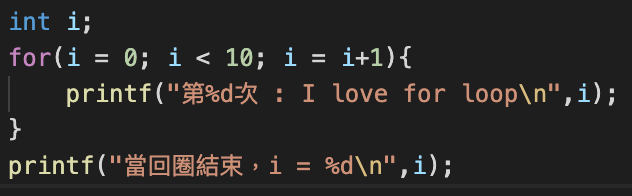
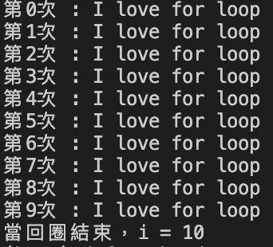
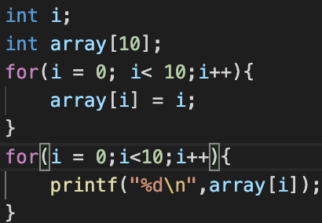
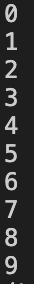

For 迴圈
迴圈的作用是可以重複執行回圈裡面的程式碼，直到特定的情況才停止。
又三種基本的迴圈分別為：for loop, while loop, do...while loop
首先介紹for loop:
for loop 的語法是：
for(起始值; 條件式; 更新值)
舉個例子:

結果會輸出：

可以看到i從0開始，當i跑到10得時候，因為回圈的條件式是:i<10，所以不符合回圈的條件了，就會結束回圈執行接下來的程式碼。
在之前的章節學習過array（陣列）的用法了，這時候我們可以把陣列加上for迴圈來一起使用，來看看兩個例子吧！
第一個ex:
用for回圈讓i從0跑到9，並同時把i的值放入array的第i個位置。

i++在這邊可以看成i = i+1;

可以看到輸出的結果是array裡面存了0到9的值。
第二個ex：
另外一個for迴圈很常用的地方是用在連續的加法上，例如想要計算從1加到100，就可以這樣寫。

輸出ans會得到：

ans = ans + i:
可以想成先計算右邊的ans+i，再把結果傳給右邊的ans，此時，原本的ans就會變成新的ans。
例如：原本的ans = 10;
ans = ans+3;
右邊的ans+3之後會得到13，之後把13傳給左邊的ans，所以現在ans = 13;